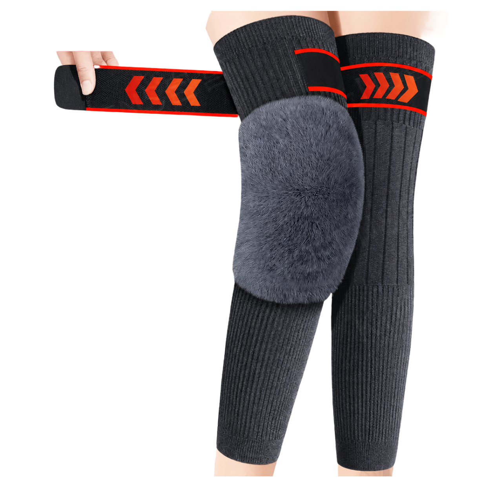
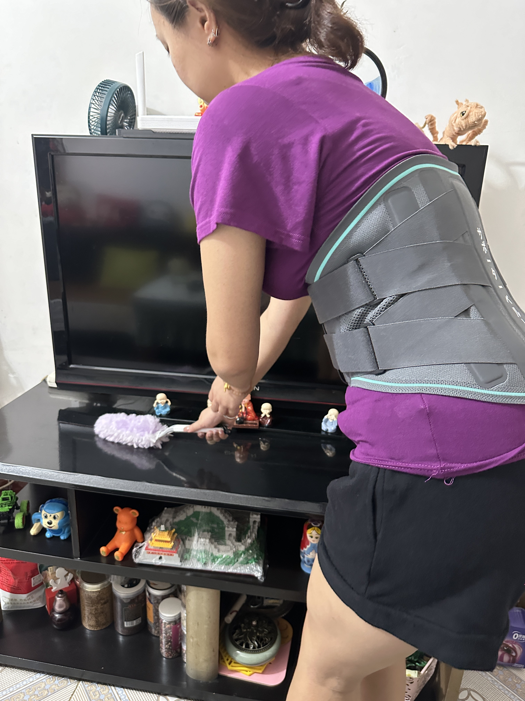
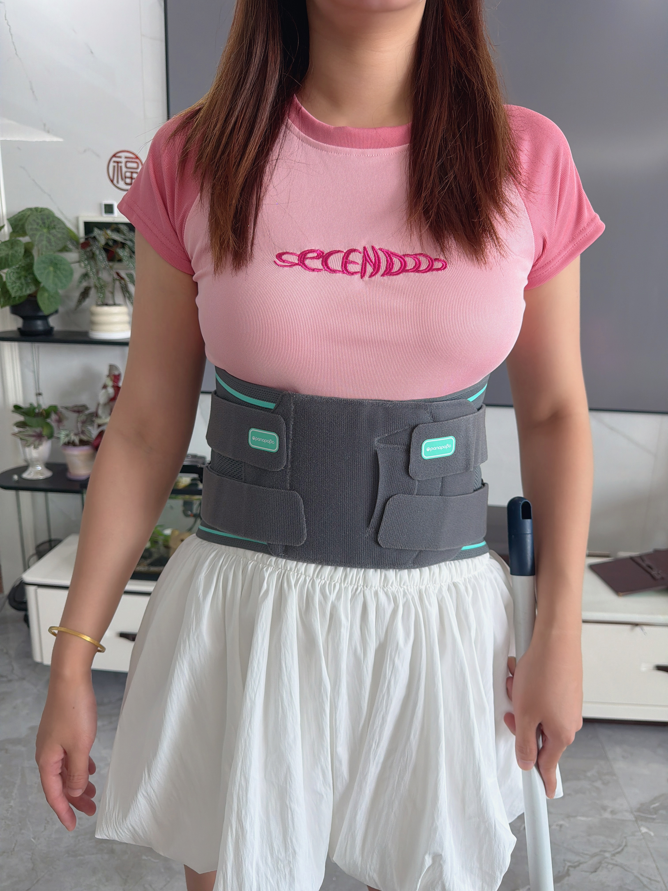
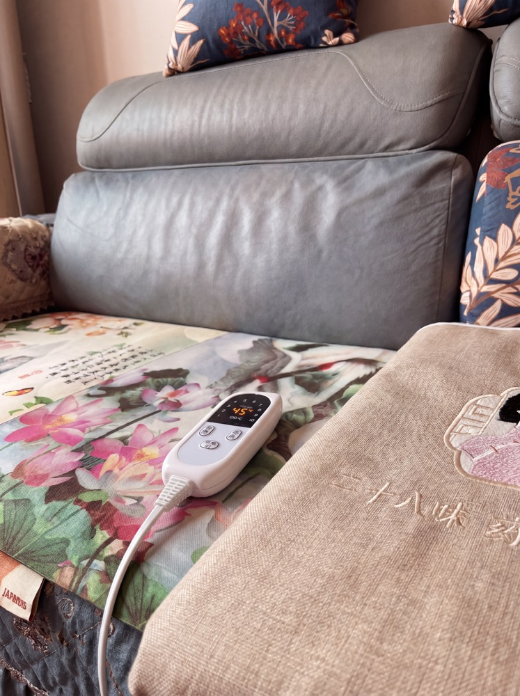
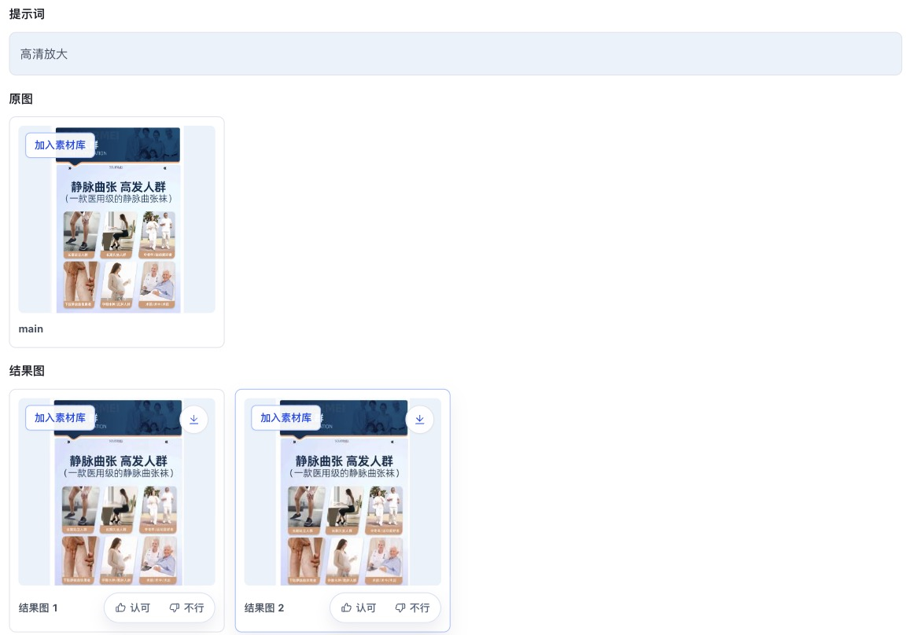
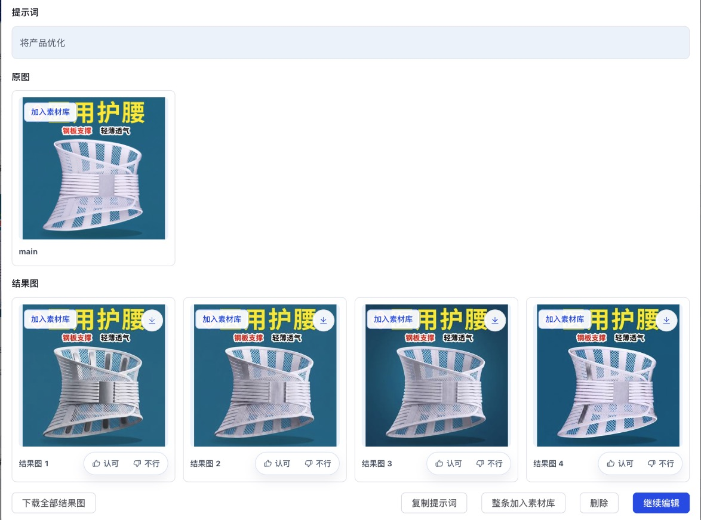
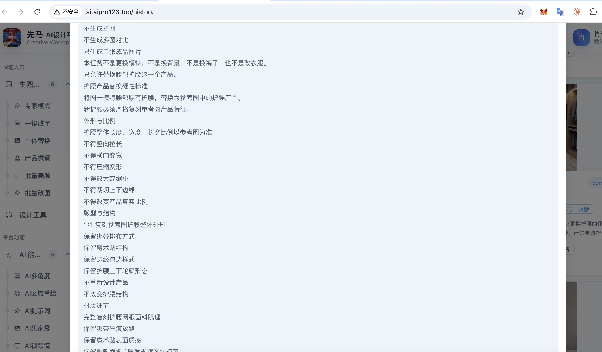
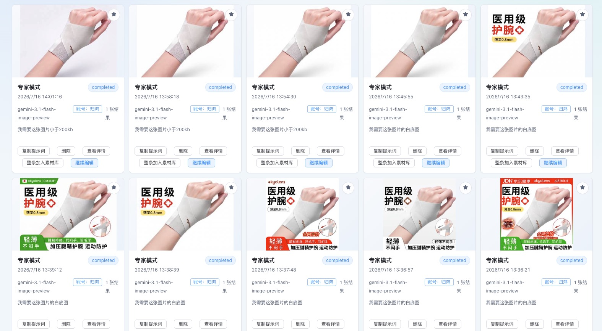
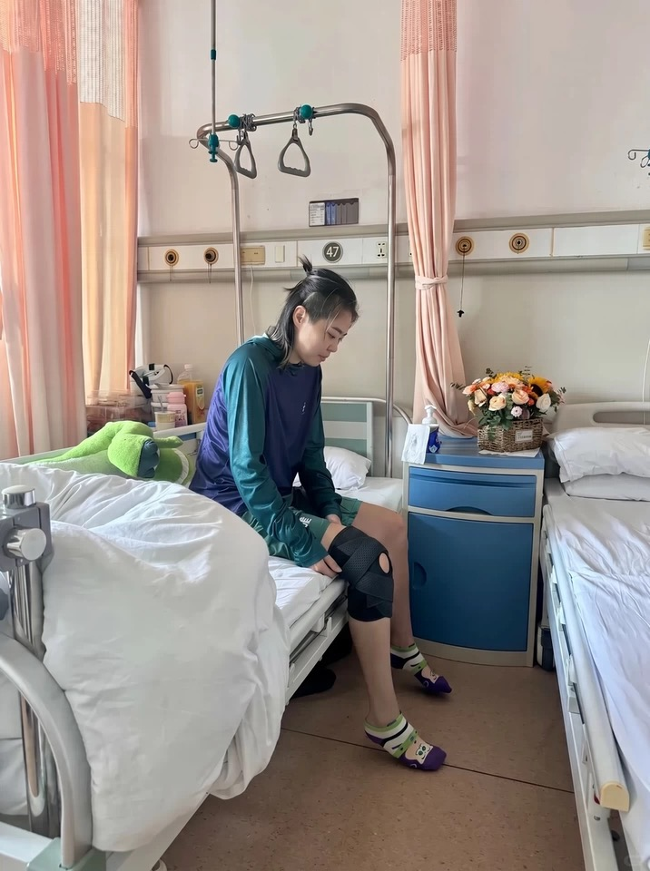
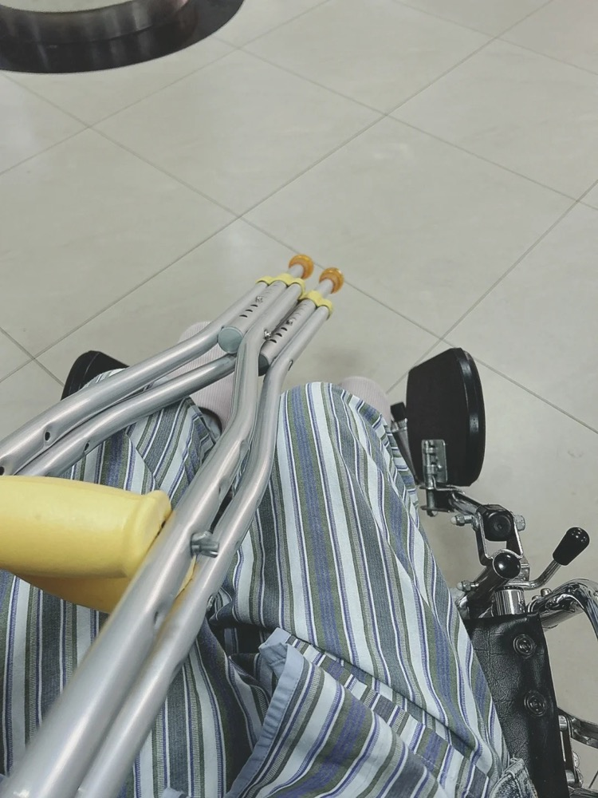

先马电商 · 数智中心TRAINING
00

AI PLATFORM · 运营培训
设计平台使用指南
方法论 · 让你回去知道怎么做
节约积分
提高效率
建立认知
数智中心 星河界-梦蝶
目录Contents00
全场地图
今天讲什么
01不是AI不好用
02素材怎么选
03提示词怎么写
04案例快速演示
05结果怎么判断
06调整怎么操作
07带走的工具
今天讲什么
Build AI Awareness
开场Problem00
PART 01 · 从问题出发
不是AI不好用
同一任务反复生成，时间和积分都在流失
不是AI不好用
The Root Cause
痛点Common Issues00
平台常见现象
你可能也遇到过
10+
反复生成
同一任务反复生成10+次
?
改了还是不对
改了半天，出来还是不满意
时
时间全耗进去
一张图磨半天，活儿堆着
重
整组重生
一张不满意，4张全重做
说明：这是平台常见现象，不针对个人
常见现象
Not Alone
根源Root Cause00
问题根源
对AI的预期不对
误区1
AI能理解模糊需求
实际：AI需要明确指令
误区2
AI一次就能做对
实际：AI需要迭代和调整
误区3
结果不好是AI问题
实际：素材、提示词、检查都很关键
今天不只教功能，而是教你们：建立正确的AI认知，掌握可复用的方法
三个误区
Mindset First
平台Platform00
先认识平台能力
平台能做什么
主体替换
把商品融入现有优质场景
场景替换
保留商品，更换背景环境
AI买家秀
生成真人上身或使用效果
一键改字
替换图片文案、价格和卖点
产品微调
优化细节、材质和画面质感
批量改图
对一批图片执行相同操作
专家模式
用多图参考处理复杂需求
已产出调整
继续修改已经生成的结果
素材库
管理并复用常用业务素材
场景化
沉淀好用场景，下次直接套用
这一页先看平台有什么，下一页再看业务需求该选什么
平台功能
Capability Map
怎么选Which One00
功能这么多,别慌
什么场景选什么
商品进新场景
把商品放进别人的好场景里 → 主体替换
Swap
要真人展示
想要真人上身/使用的效果图 → AI买家秀
Model
改图上文字
只改图片上的文案、价格、卖点字 → 一键改字
Text
单图不满意
细节、材质、质感想再提一提 → 产品微调
Refine
一批图同样操作
一次改一堆图的文字/去水印 → 批量改图
Batch
拿不准用哪个?直接上专家模式——0~5张参考图,复杂需求它基本都能扛
怎么选功能
Which One
方法总览Workflow00
选对功能只是入口
一套完整的出图链路
01
素材
选择清晰、完整、信息一致的参考图
02
生成
选对功能，写清任务与结果要求
03
判断
检查商品、场景与画面真实感
04
调整
先诊断原因，一次只改一个变量
05
沉淀
保存素材、提示词、参数和可复用场景
明确需求、选对功能后，始终按素材 → 生成 → 判断 → 调整 → 沉淀完成闭环
完整工作链路
From Input to Reuse
方法论Method 0100
PART 02 · 素材决定成败
素材怎么选
AI对素材质量敏感，好素材才有好结果
多图参考
穿戴图
白底图
素材怎么选
Material First
方法1Good vs Bad00
主体替换素材对照
什么样的素材更好用
✓
好的主体替换素材

产品完整清晰，穿戴与展开形态都能看见；颜色、材质、绑带和结构可辨，背景干净。
×
不好的主体替换素材

背景和无关物体过多，产品被人物与衣服遮挡；只展示单一侧面和局部，AI难以提取完整结构。
不是“穿戴图不好”，而是要清晰、少遮挡、形态完整。穿戴图定形态，白底图锁细节；角度越接近，主体替换越自然。
主体替换素材对照
Material Quality
方法1Scene00
主体替换原场景要求
什么样的场景图更好用
✓
好的场景图

人物、护腰和佩戴关系完整清晰，目标位置明确，画面分辨率足够，AI 容易理解要替换的位置与形态。
×
不好的场景图

只有沙发、电热毯和控制器等局部物体，缺少完整人物与明确穿戴位置，无法提供有效的主体替换关系。
判断重点不是“画面是否好看”，而是：目标主体是否完整，位置和使用关系是否清楚。
场景图标准
Good vs Bad
方法论Method 0200
PART 03 · 提示词是AI的说明书
提示词怎么写
AI不会猜你的意图，说清楚才能做对
5要素
参考框架
可迁移
提示词怎么写
Prompt Engineering
方法25 Elements00
提示词使用的第一条原则
一套提示词，不可能解决所有问题
五要素只是参考框架，具体内容必须根据产品、品类和业务场景重新描述。
1
要做什么
任务：替换护膝 / 生成买家秀
2
操作对象
替换哪个 / 保留哪个
3
必须保留
人物/姿势/背景/构图/光线
4
不能改变
外形/颜色/材质/结构/比例
5
期望效果
自然/真实/高清/融合
框架可迁移
品类细节要重写
品类不同，关注点不同：护腰看佩戴位置、包裹关系和支撑感；宠物药品看适用对象、剂型和使用情境；地毯看纹理、尺寸比例、铺设空间和家居风格。
参考框架
Adapt to Each Category
方法2Examples00
三种提示词对比
什么是好提示词
✗ 太简单（信息不足）
"把护膝换到这个场景里"
问题：不知道保留什么、不知道商品特征、不知道要什么效果
✗ 太复杂（无脑堆词）
"保留人物保留姿势保留背景保留构图保留光线保留一切，不能改变不能改变绝对不能改变，要自然要真实要高清要精致要完美要融合要好看要专业……"
问题：车轱辘话反复堆，没说清具体保留什么、改什么，AI抓不住重点
✓ 正确版本（5要素清晰）
"参考人物穿戴图中护膝的佩戴位置、包裹关系、比例和角度，将白底细节图中的黑红护膝替换到人物腿部。保留人物、姿势、动作、背景环境、构图和光线；锁定护膝的外形、黑红配色、材质、纹理、结构和比例。画面要自然、真实。"
5要素齐全、重点清晰、不重复
提示词对比
Right Way
方法2Real Cases00
实际案例 · 提示词太少
提示词过少的坑

只写"高清放大" · 结果几乎没变化

只写"将产品优化" · AI只能瞎猜
信息不足，AI只能猜，猜不中就反复重来
提示词过少
Too Little
方法2Real Cases00
实际案例 · 另外两种坑
过多 & 反复重生

提示词过多 · 重点被淹没

同一任务反复生成 · 费时又费分
这些都是匿名化的真实案例，看看是不是也遇到过
实际案例
Learn from Mistakes
互动 · 测试Quiz00
互动 · 你来答
下面哪个提示词更好？
A"换护膝，要自然"
B"将黑红护膝替换到场景中护膝位置，保留人物姿势背景，不改变护膝颜色材质，画面自然真实"
C"保留保留保留，不改变不改变不改变，要自然要真实要高清要融合..."
互动 · 测试
先想想，按 → 看答案
互动 · 揭晓Answer00
答案
选B，5要素清晰，不重复
✓
任务明确：替换护膝
✓
对象清楚：黑红护膝
✓
保留具体：人物姿势背景
✓
效果明确：自然真实
记住：说清楚才能做对，AI不会猜你的意图
互动 · 揭晓
Got It
案例Demo00
PART 04 · 方法印证
护膝案例演示
一个真实案例，印证前面讲的方法
案例演示
Case Study
案例Material00
印证方法1
这两张图分别提供什么
黑红护膝（白底细节图）

锁定颜色、材质和结构细节 → 细节参考
康复医院人物图（穿戴形态参考）

提供佩戴位置、人物姿势和包裹关系 → 形态参考
素材选择
Good Materials
案例Replace00
印证方法2
主体替换提示词
"参考人物穿戴图中护膝的佩戴位置、包裹关系、比例和角度，将白底细节图中的黑红护膝替换到人物腿部。保留人物、姿势、动作、背景环境、构图和光线；锁定护膝的外形、黑红配色、材质、纹理、结构和比例。替换后画面要自然、真实，商品与人物和场景自然融合。"
要素1
任务：替换护膝
要素2
对象：黑红护膝
要素3
保留：人物姿势背景
要素4
特征：外形颜色材质
要素5
效果：自然真实融合
✓ 完美
主体替换
5 Elements
案例UGC Material00
AI买家秀素材对照
什么素材可以用
✓
合格的买家秀素材

人物、动作和康复场景完整清晰，护膝佩戴位置可辨，能够为 AI 提供明确的使用情境。
×
不合格的买家秀素材

只有病号服、拐杖和轮椅等局部元素，缺少完整人物、商品与使用动作，参考信息不足。
买家秀素材不只要“像这个场景”，还要同时提供：完整人物、清楚动作、明确商品。
买家秀素材
Good vs Bad
案例UGC Prompt00
用六个维度说清画面
AI买家秀提示词
01 人物
60岁左右中老年人
肤质、表情真实自然
肤质、表情真实自然
02 场景描述
医院康复科候诊区
米白墙面、指示牌
米白墙面、指示牌
03 光线
窗边自然光
柔和、不刺眼
柔和、不刺眼
04 角度构图
半侧面、中景
手机原相机抓拍感
手机原相机抓拍感
05 动作姿态
坐在候诊椅
自然调整护膝绑带
自然调整护膝绑带
06 真实感画风
生活化随手拍
避免广告精修感
避免广告精修感
六个维度组合成完整提示词
“生成一张真人使用黑红护膝的买家秀：60岁左右中老年人，皮肤保留真实纹理和自然表情；位于医院康复科候诊区，米白墙面、康复科指示牌，窗边柔和自然光；采用半侧面、中景、手机原相机抓拍构图；人物坐在候诊椅上自然调整护膝绑带，旁边可放折叠拐杖；整体呈现生活化随手拍质感，避免商业广告精修感。”
操作顺序：选 AI 买家秀 → 上传合格素材 → 填六维提示词 → 生成并检查
买家秀提示词
6 Dimensions
新功能UGC Scene Preset00
跑通一类场景，就沉淀一套方法
买家秀场景化
01
按品类沉淀
护具、服饰、家居等品类，对人物、动作和展示重点的要求不同
02
按场景细分
同一品类也要区分医院康复、日常居家、运动训练等使用场景
03
沉淀并共建
业务部门先沉淀并验证模板，成熟后提交 AI 实验室评估并更新到平台
一套买家秀不可能覆盖所有品类和使用场景；每类业务都应沉淀更匹配的成熟模板。
业务部门自行沉淀与验证 → 提交 AI 实验室 → 评估后更新到平台 → 更多团队复用
买家秀场景化
Reusable by Category & Scene
方法论Method 0300
PART 05 · AI会出错，人要检查
结果怎么判断
AI不是最终决策者，人负责检查和决策
商品检查
场景检查
真实感
结果怎么判断
Quality Check
方法3Checklist00
生成结果后按这个顺序检查
三步检查清单
商品
检查商品质量
• 有没有变形？
• 颜色对不对？
• 材质、结构、比例正常吗？
• 细节（logo、纹理）清晰吗？
• 颜色对不对？
• 材质、结构、比例正常吗？
• 细节（logo、纹理）清晰吗？
场景
检查场景合理性
• 场景是否符合需求？
• 人物姿势对不对？
• 背景合不合理？
• 商品与场景是否融合？
• 人物姿势对不对？
• 背景合不合理？
• 商品与场景是否融合？
真实
检查真实感
• 看起来自然吗？
• 光影合理吗？
• 有没有明显AI痕迹？
• 可以用于业务吗？
• 光影合理吗？
• 有没有明显AI痕迹？
• 可以用于业务吗？
记住：不检查就使用 = 把质量风险交给AI = 不负责任
三步检查
3-Step Check
方法3Troubleshooting00
遇到问题怎么办
常见问题对照表
商品变形
素材角度/比例不匹配 → 换素材
Material
商品色差
提示词没说清颜色 → 改提示词，强调具体颜色
Prompt
细节丢失
素材分辨率不够 → 换高清素材
Material
场景不对
提示词场景描述模糊 → 改提示词，具体描述场景
Prompt
整体不真实
模型不适合/参数不对 → 换模型或调参数
Model
4张都不满意
素材或提示词有根本问题 → 先检查素材 → 再检查提示词
Check
拍照保存这张表，回去遇到问题直接查
常见问题
Quick Reference
方法论Method 0400
PART 06 · 调整是常态，迭代才能出好结果
调整怎么操作
AI一次做对是小概率，有方法地调整才能快速收敛
诊断流程
决策树
节约积分
调整怎么操作
Iteration
方法4Decision Tree00
结果不满意时按这个流程判断
诊断决策树
第一步：4张都不满意？
→ 是：整组问题，从源头调整 → 否：只有1-2张不满意，单张调整
整组不满意
从源头调整
1. 先检查素材 穿戴图是否清晰、无遮挡、角度接近？白底图细节完整吗？
→ 多图信息矛盾或素材有问题，就更换后再生成
→ 多图信息矛盾或素材有问题，就更换后再生成
2. 再检查提示词 5要素齐全、重点说清了吗？
→ 有问题就改提示词重新生成
→ 有问题就改提示词重新生成
3. 最后调模型/参数 前两步都没问题才考虑
→ 尝试其他模型或调参数
→ 尝试其他模型或调参数
只有1-2张不满意
单张调整
1. 选中不满意的那张 保留其他可用的图
2. 点"已产出调整" 说清要改什么（如"颜色太浅调深"）
3. 一次只改一个变量 别同时改颜色姿势背景，改完看效果再动下一个
关键：整组不满意≠换模型，单张不满意≠整组重生
诊断决策树
Save Credits
方法4Principles00
节约积分的关键
4个原则
1
整组不满意 ≠ 换模型
先看素材和提示词，模型是最后一步
2
单张不满意 ≠ 整组重生
用"已产出调整"，不要浪费其他可用的图
3
一次只改一个变量
同时改多个，不知道哪个有效
4
记录有效的调整
下次遇到类似问题，直接用
记住：调整不是失败，而是AI使用的正常流程
4个原则
Best Practice
使用共识Capability Boundary00
先做好可控的，再认识能力边界
平台能优化什么，不能承诺什么
模型决定能力上限
应用层无法彻底解决
输入信息有限 原图模糊或细节缺失，AI无法保证准确补全
生成存在边界 商品结构、人物肢体和文字仍可能出错
依赖模型升级 平台接入行业主流模型，底层能力需随模型持续演进
自研基础模型需要投入大量时间、人力、算力和资金，也未必优于行业领先模型。
平台提升落地效率
我们可以持续优化
模型接入 评估并更新更适合业务场景的成熟模型
体验与交互 优化操作流程、提示引导和使用效率
业务定制 沉淀场景、模板、素材和成功参数，支持团队复用
基础模型决定“能做到什么程度”，平台负责让它更容易用、更适合业务、更容易复用。
运营人员反馈→部门 AI BP 收集整理→通过需求表统一提交→数智中心定期评估与更新
能力边界与反馈
Feedback Loop
总结Summary00
拍照保存
操作口诀
生成前
做好准备
✓ 先明确目标
✓ 选对功能
✓ 检查素材质量
✓ 提示词写清5要素
✓ 选对功能
✓ 检查素材质量
✓ 提示词写清5要素
结果不满意
有序调整
✓ 4张都不满意 → 整组问题
└ 先看素材 → 再看提示词 → 最后调模型
✓ 1-2张不满意 → 单张问题
└ 已产出调整 → 一次只改一个变量
└ 先看素材 → 再看提示词 → 最后调模型
✓ 1-2张不满意 → 单张问题
└ 已产出调整 → 一次只改一个变量
结果可用
沉淀复用
✓ 用检查清单判断
✓ 下载并加入素材库
✓ 保留提示词和参数
✓ 下次优先复用
✓ 下载并加入素材库
✓ 保留提示词和参数
✓ 下次优先复用
记住：少重复一次，就是节约时间；多沉淀一次，下次就能更快
操作口诀
Quick Guide
使用支持Credit Request00
平台积分不足时
扫码申请追加积分
积分申请表扫码填写
当平台积分不足时，各业务方可通过本流程发起积分追加申请。
1
工作日内申请
当天内完成审核，并配置到账。
2
非工作日申请
顺延至首个工作日进行集中处理。
3
写明积分用途
请填写具体业务场景，例如：用于生成 AI 买家秀。
先按本次培训方法减少无效生成；确需追加时，再扫码申请。
积分申请表
Scan to Apply
总结Mindset00
用之前，先摆正心态
AI使用心法
祛魅
AI不是神仙，是个会算的工具，别神话它
Tool
认边界
它解决不了100%的问题，别指望一步到位
Limit
给指令
它不会猜，你说多清楚，它就做多准
Clear
人把关
它会出错，最后拍板的永远是人
Check
肯练手
用得多才用得好，把它当成你的一个同事
Practice
降低预期、主动去用——你会带，它就好用
AI使用心法
Mindset First
结尾Takeaway00
本次培训的核心
了解 AI，掌握方法，才能真正用好平台
从素材、生成、判断到调整与沉淀，把每次尝试变成可复用的经验。
01
通知与 Bug 反馈
关注「AI设计平台运营通知群」获取更新；遇到 Bug 可直接在群里反馈，我们会尽快处理。
02
业务需求反馈
新增需求先反馈至部门 AI BP，由 AI BP 收集整理并通过需求表统一提交数智中心。
03
平台注册提醒
“公司花名”栏填写花名；“真实姓名”栏务必填写真名，才能绑定公司钉钉并一键登录。
平台持续更新，欢迎大家使用、反馈与共建
谢谢大家
数智中心 星河界-梦蝶
AI Design Platform